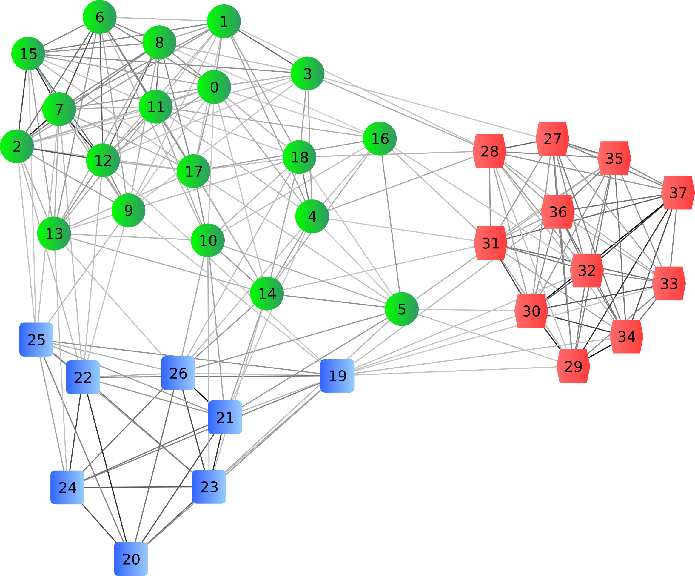

*SQL
Uladzimir Mihura
November 1, 2012

Source: geek & poke
Plan
- Why NoSQL?
- Aggregate Orientation
- Distribution Models
- CAP, ACID, BASE, WTF
- Polyglot persistance
Chapter I
Why NoSQL?
There are no new database designs.
There are only new implementations and combinations.
Chapter I: Why NoSQL?
A database storing application-friendly formatted objects, each containing collections of attributes which can be searched through a document ID, or the creation of ad-hoc indexes as needed by the application
Chapter I: Why NoSQL?
Three decades past, the relational empire conquered the hierarchical hegemony. Today, an upstart challenges the relational empire's dominance, threatening the return of hierarchy.
Chapter I: Why NoSQL?
Factor 1: Object-Relational Impedance Mismatch
Factor 2: Database is not an integation point anymore
Chapter I: Why NoSQL?
Factor 3: Clusters

Chapter I: Why NoSQL?
Chapter II
Aggregate Orientation
Aggregate is a cluster of associated objects that we treat as a unit for the purpose of data changes.
Chapter II: Aggregate Orientation
Data model for relational database
Chapter II: Aggregate Orientation
An aggregate data model
Chapter II: Aggregate Orientation
An aggregate data model
//customers
{
"id":1,
"name":"Vova",
"billingAddress":{"city":"Minsk"}
}
//orders
{
"id":99,
"customerId":1,
"orderItems":[{
"productId": 84,
"productName" : "Connected",
"price":30.23
}
],
"shippingAddress":{"city":"Minsk"}
"payment":{
"cardNumber":"0000-0000-0000-0000",
"billingAddress":{"city":"Minsk"}
}
}
Chapter II: Aggregate Orientation
Aggregate oriented database types
- Key Value / Tuple Store
- Wide Column Store / Column Families
- Document Store
Aggregate ignorant database types
- Relational Databases
- Graph Databases
Chapter II: Aggregate Orientation
Chapter III
Distribution Models
Techniques for data distribution
- Single-Server*
- Sharding
- Master-slave replication
- Peer-to-peer replication
- Sharding + Replication
Chapter III: Distribution Models
Single-Server
You don’t want to distribute your data!
Chapter III: Distribution Models
Sharding

Chapter III: Distribution Models
Types of sharding
- Partitioning by Application Function
- Sharding by hash or key
- Sharding via a Lookup Service
Chapter III: Distribution Models
Replication
Chapter III: Distribution Models
Combining Sharding + Replication
Chapter III: Distribution Models
Chapter IV
CAP, ACID, BASE
CAP Theorem

Chapter IV: CAP, ACID, BASE
CAP Theorem
Given the 3 properties of Consistency, Availability and Partition tolerance, you can get only 2.
However, it depends on how you define this 3 properties.
Chapter IV: CAP, ACID, BASE
Consistency
Consistency is that when a transaction is taking place on a database item, then access to it should not be allowed to other users during that transaction.
Consistency states that only valid data will be written to the database.
Data consistency summarizes the validity, accuracy, usability and integrity of related data between applications and across the IT enterprise.
Chapter IV: CAP, ACID, BASE
Let's try once again...
- Logical consistency - ensuring that different data items make sense together.
- Replication consistency - ensuring that same data item has same value when read from different replicas.
Chapter IV: CAP, ACID, BASE
Partition Tolerance
Chapter IV: CAP, ACID, BASE
Availability
Every request received by a nonfailing node in the system must result in response.
A guarantee that every request receives a response about whether it was successful or failed.
Chapter IV: CAP, ACID, BASE
In a system, that may suffer partitions, as a distributed system do, you have to trade off consistency versus availability
Chapter IV: CAP, ACID, BASE
Chapter V
Polyglot persistance
Thank you!